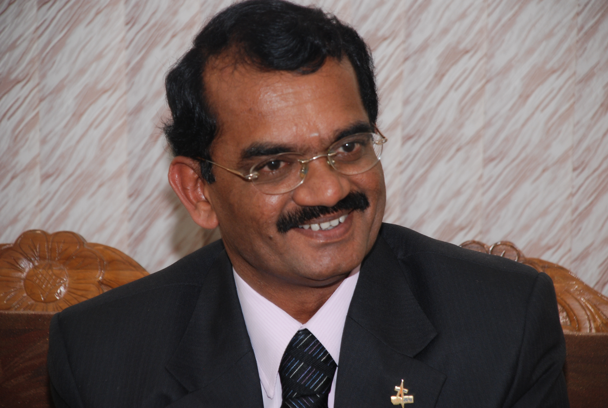

From a village.
To the Moon.
An engineer by training. An explorer by vocation. A life shaped by education, teamwork and service.

DR. MYLSWAMY ANNADURAI
“Moon Man of India”
Born 2 July 1958 · Kodhawady, Tamil Nadu01 / ROOTSAn education
An education
in possibility.
After his early education in his native village, Annadurai studied engineering at the Government College of Technology, Coimbatore, graduating in 1980. He earned his master's degree at PSG College of Technology in 1982 and obtained his PhD from Anna University.
That same year, 1982, he joined the Indian Space Research Organisation. Work on satellite simulation and spacecraft operations became the foundation for a career in mission leadership.
02 / LEADERSHIPBuilding missions.
Building missions.
Building teams.
His assignments stretched from the IRS and INSAT satellite programmes to EDUSAT and lunar exploration. As project director of Chandrayaan-1 (2004–2009), he led the team behind India's first lunar mission.
He served as project director of Chandrayaan-2 during its development from 2008 to 2013, and as programme director for Indian Remote Sensing and Small, Science and Student Satellites from 2011 to 2015. From 2015 to 2018, he directed the ISRO Satellite Centre, now the U R Rao Satellite Centre.
03 / THE CHRONICLE
A lifetime, in chapters.
Completed UG degree from Government College of Technology, Coimbatore
Completed PG degree from P.S.G College of Technology, Coimbatore
Joined ISRO
Team leader to develop S/W satellite Simulator
Spacecraft operations manager, IRS-1A
Spacecraft operations manager, INSAT-2A
Mission director, INSAT-2C
Mission director, INSAT-2D
Mission director, INSAT-2E
Mission director, INSAT-3B
Mission director, GSAT-1
Mission director, INSAT-3E
Associate project director, EDUSAT
Project director, Chandrayaan-1
Project director, Chandrayaan-2
Programme director, IRS & SSS (Indian Remote Sensing & Small, Science and Student Satellites)
Director, ISRO Satellite Centre, Bangalore
Vice president, Tamil Nadu State Council for Science and Technology
Chairman, board of governors, National Research and Design Forum
Principal Advisor, Tathya Earth, Mumbai
Senior Advisor, Gencrest India Pvt Ltd, Mumbai
Patron Edutec4 Space, Dubai
Senior Advisor Space Zone India, Chennai
Member, American India Foundation Trust, New Delhi
Director, Board of SSI Innovations Pvt Ltd, New Delhi
Director SS Innovations international Inc, Florida USA
Advisor, Dhaksha Unmanned Systems, Chennai
Executive President - Senior Citizens Support Forum, Chennai
Chairman, HONC Gas Pte Ltd, Singapore
Member, Governing Council, GM University, Davangere
Chairman, Sectoral Innovation Programs, Bangalore Bio-Innovation Centre
Chief Scientist, Cosmochute, Ahmedabad, India
Senior Advisor, XAGROTOR Pvt Ltd, Chennai, India
Principal Advisor, Big Bang Boom Solutions (BBBS) Pvt Ltd, Chennai, India
Independent Director, Board of Kaynes Technology India Limited (KAYNES TECH LTD)
Chairman, School Curriculum Design Committee, Tamil Nadu
04 / STILL LOOKING FORWARDScience in
Science in
everyday life.
After retiring from ISRO, Dr. Annadurai continued to advise startups, charities and institutions. His recorded appointments include vice president of the Tamil Nadu State Council for Science and Technology (2019–2023), and advisory work in Earth observation, biotechnology, aerospace and education.
The chronology above preserves appointments as listed in the September 2026 source snapshot; open-ended dates are the source's record, not independent confirmation of a current appointment.
Writing in Tamil
The original archive features Kaiyaruke Nila and Sirakai Virikkum Mangalayan, bringing space exploration into Tamil literary life. It also records the C. Pa. Aditanar Literary Award in 2013.